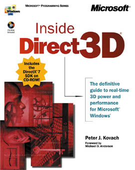
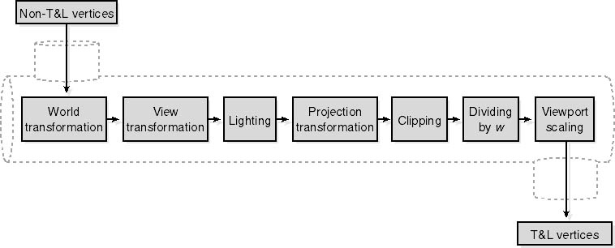

As you saw earlier in this chapter, the last stage of the T&L pipeline is to transform the vertices from projection space into screen space based on the viewport. In screen space, the x and y coordinates of the vertices correspond to pixels, and the z coordinate is the value that will be stored in the z-buffer. Before sending any vertices through the T&L pipeline, you need to pass Direct3D a structure that specifies the viewport parameters.
With DirectX 7, the viewport rectangle is defined using the D3DVIEWPORT7 structure. This structure, shown earlier, is used by the viewport manipulation methods of the IDirect3DDevice7 interface: IDirect3DDevice7::SetViewport and IDirect3DDevice7::GetViewport.
The D3DVIEWPORT7 structure, specified as the only parameter of the IDirect3DDevice7::SetViewport method, describes the viewport parameters and is defined as follows:
// C++ struct definition
typedef struct _D3DVIEWPORT7 {
DWORD dwX;
DWORD dwY;
DWORD dwWidth;
DWORD dwHeight;
D3DVALUE dvMinZ;
D3DVALUE dvMaxZ;
} D3DVIEWPORT7, *LPD3DVIEWPORT7;
|
| Parameter | Description |
|---|---|
| dwX and dwY | The pixel coordinates of the top-left corner of the viewport on the render-target surface. Set these members to 0 unless you want to render to a subset of the surface. |
| dwWidth and dwHeight | The dimensions, in pixels, of the viewport on the render-target surface. Set these members to the dimensions of the render-target surface unless you're rendering only to a subset of the surface. |
| dvMinZ and dvMaxZ | These members define the maximum and minimum nonhomogeneous z coordinates that result from the perspective divide and are projected onto the w = 1 plane. |
...
FinalColor = SourcePixelColor · SourceBlendFactor + DestPixelColor · DestBlendFactor
The variables used in this equation are defined as follows:
Narrow image:
Wide image:
